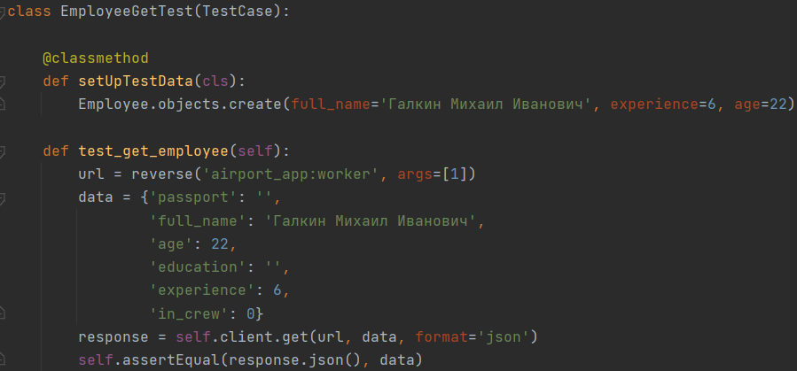

3.1 Тесты
Задание:
- Написать тесты на модель в Вашем API (3 таблицы)
- Написать тесты на эндпойнты в Вашем API (3 GET запроса, 3 POST запроса, 3 PATCH запроса)
Тесты на модель:
Проверка атрибута verbose_name
Проверка максимальной длины
Проверка строкового отображения
Тесты на get запросы:
